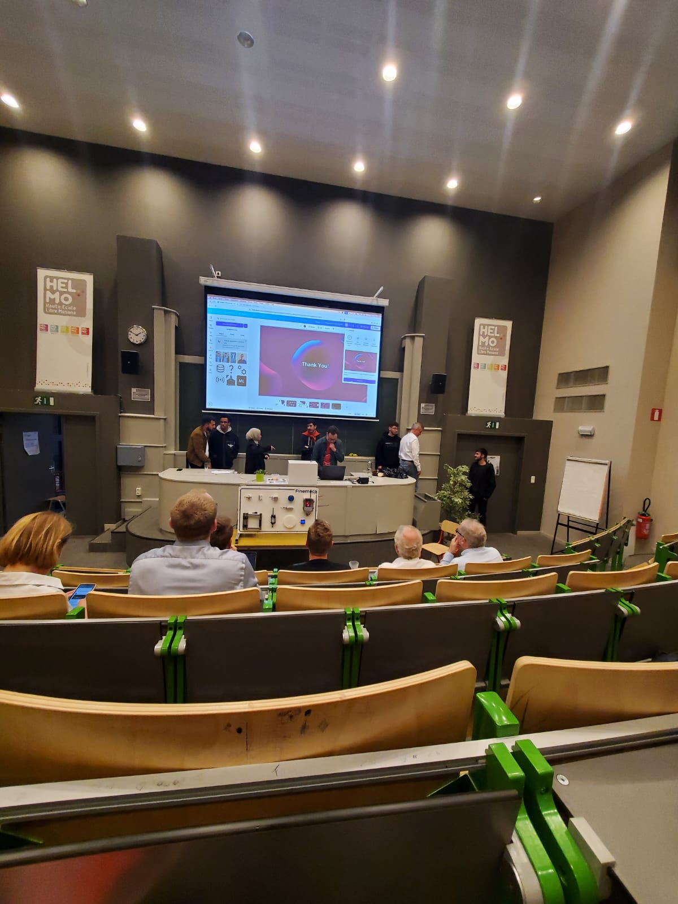

Event type: Three-day hackathon
Location: HELMo University College, Liège
Organisers: HELMo and Technifutur
Theme: Industry 5.0, sustainability, AI, IoT and workplace innovation
Project: SolaTrack
Result: Third Place

In May, I had the opportunity to participate in a three-day hackathon hosted by HELMo University College in Liège and organised together with Technifutur. The event brought together students from different universities and backgrounds to collaborate on projects inspired by Industry 5.0 themes, including artificial intelligence, IoT, sustainability and new technologies for the workplace.
This was my first time attending a hackathon of this type, and it became a memorable experience from the very beginning. Some of us arrived in Liège earlier than planned to explore the city before the event started. This helped create a positive atmosphere before the official programme began.
The first day did not go completely as planned because the original visit to the Technifutur competence centre had to be cancelled when the bus did not arrive. Instead, the organisers moved the presentations to an auditorium at the university. Although this was unexpected, the evening still gave us a clear introduction to the challenge, the sponsoring companies and the expectations for the weekend.
Later that evening, we formed teams. Since only a limited number of students from the same school could join one team, I had the chance to collaborate with students from HELMo. This pushed me to work with new people, communicate clearly and share ideas quickly.
On the second day, our team developed the idea for SolaTrack, a web application designed to help users estimate the cost, energy production and sustainability impact of installing solar panels. The goal was to make complex energy calculations more understandable and accessible for everyday users.
One of the biggest challenges was working with a framework we had never used before. This required learning on the spot, reading documentation, testing solutions and solving problems under time pressure. Although this was sometimes frustrating, it also made the experience very valuable because it forced me to adapt quickly.
By the third day, we focused on polishing the application and preparing our final pitch. A short workshop on pitching helped us structure the presentation clearly and explain the value of our project within a limited time.
When our project placed third, it was an exciting and rewarding moment. More importantly, the hackathon taught me how much can be achieved in a short time when people combine different skills, stay open-minded and keep working through challenges.
Overall, the HELMo Hackathon was intense, tiring and sometimes chaotic, but also one of the most rewarding learning experiences I have had. It strengthened my teamwork, creativity, technical confidence and ability to present ideas to others.
SolaTrack was a web application designed to help users estimate solar panel costs, energy production and sustainability impact. The project aimed to make renewable energy decisions more understandable for everyday users.